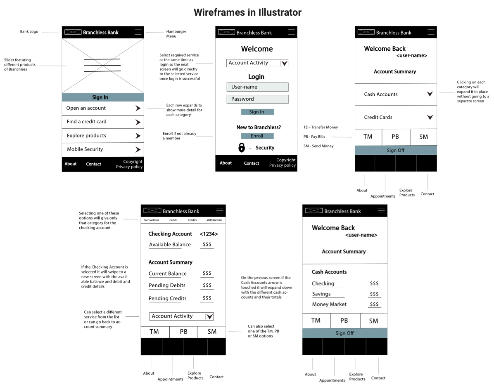

Branchless Bank
view the prototype
About
You travel too much? Can never seem to take time out of your busy work schedule? Struggling with your banking needs? What if you could do it all from your phone!
This project is the design and prototyping of a fictional iOS online banking app called Branchless Bank. It involves research, SWOT analysis, design brainstorming, creative brief, user-flow design and prototyping for two features - account summary and check deposit.
Vision/Goal:
The goal is to create a one stop shop for user-friendly, secure and convenient mobile banking needs.
Tools
Illustrator, Photoshop, inVision
Design Process Examples


Design Process
1. Research and brainstorming - wordlist, SWOT analysis, competitive market study.
2. Sketches in pen and paper
3. Logo design.
4. Wireframes in Illustrator
5. Branding - picked a unique theme, color pallette, type, inspirational patterns and images
6. Mockups / prototype content using Photoshop
7. Prototyping in inVision
Challenges
The main challenge I faced was selecting a color scheme that embodied trust and security while also not seeming like a traditional bank.
Selected Screenshots